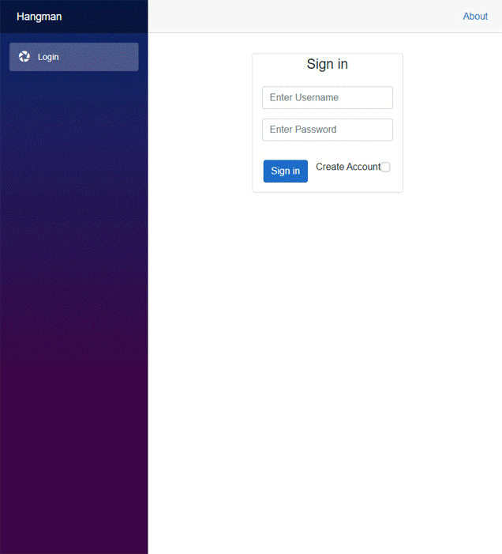
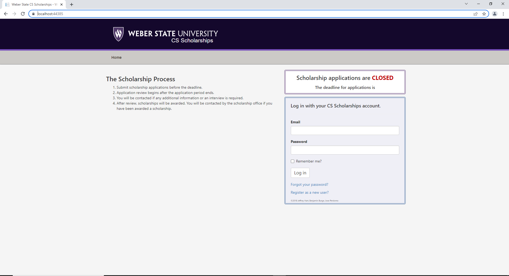
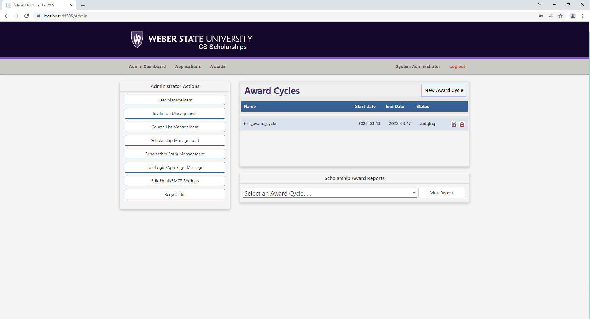
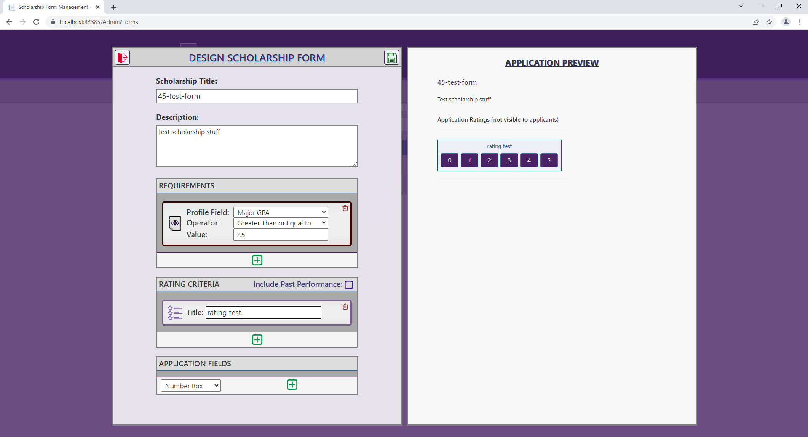
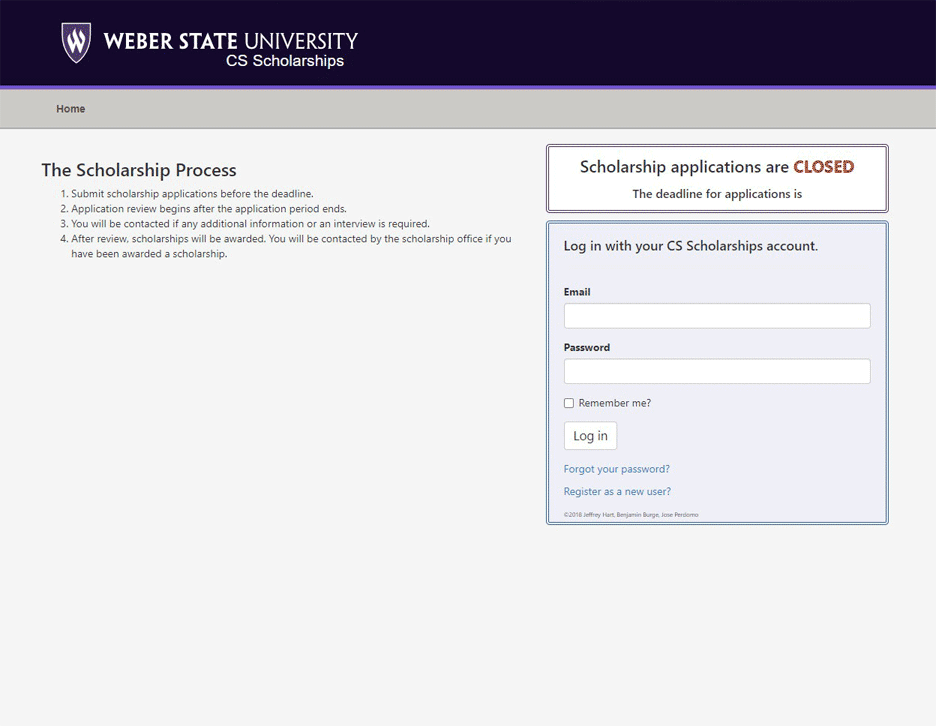

Tage Higley
Github Portfolio
Number Guessing Game
Overview
This number guessing game was an exercise in setting up web hosting, html, css, and php. This was my first usage of real php for a working project. I also learned the basics of bootstrap to design the front end. A database keeps track of the users accounts and displays a top ten scores once a game is completed. See the below details section for more info.
Details...
This project was my first real experience using php to write server side code. The php code used to handle user account creation, sign in and authentication, game processes and database content accessing and saving.This project was also my first time configuring and hosting a site for anyone to access. The hosting was done through infinityfree.com that handled a lot of the webserver configuration which made the whole process significantly easier for someone who was setting such a project up for the first time.
A list of technologies used in this project:
- HTML
- CSS with Boostrap 5
- PHP with PHPMyAdmin
- MySqls
Hangman Game
Overview
This hangman game was a group collaboration between myself and three group members. We built off our own previous number guessing games to design and build hangman. For more information see the details section below.
Details...
This hangman project was a group project between myself and three group members. We used ASP.net and Blazor to build an asynchronous web application. This was the first time anyone in our group had used ASP.net and Blazor and two of our group members hadn't used c# before. Some initial challenges involved the setup and configuration of Blazor and ourselves getting familiar with the framework. We built this project shortly after .net 6.0 was released and found some challenges finding information online as most help online was referring to .net 5.0 or later. This created some small challenges that we as a group handled overtime. The game also has account creation, user authentication with password hashing and salting, and score tracking all handled by a Microsoft Access Database.The project has a backend that keeps track of the users entered guesses and returns asynchronously to the client if they have guessed a correct letter or not. Once a game ends, either in victory or defeat, a list of the top ten best scores is read from the database and displayed on screen.
A list of technologies used in this project:
- HTML
- CSS with Bootstrap 5
- Blazor in ASP.net
- C#
- Microsoft Access
.gif of project in action:
Speed!
Overview
Speed is a two player card game built in Blazor with ASP.net that uses SignalR to connect two users together to play the game. For more information see the details section below.
Details...
This was a group project built by myself and three other groupmates.Speed is a classic card game that two players compete against one another to rid themselves of all of their cards. The first player to run out of cards wins the game.
Speed is not a turn based card game and both players can play their move at any time. This presented a situation where rapid client communication between each other and a server was needed. Our group decided that using SignalR would be the best way to achieve rapid client-server-client communication.
A list of technologies used in this project:
- HTML
- CSS with Bootstrap 5
- Blazor in ASP.net
- C#
- SignalR
.gif of project in action:

Scholarship Application Project
Overview
A scholarship application subsection site of my college's overall website. This project was tasked by my professor to update to the latest version of .net 6.0 and fix some bugs present in the application. See the details section for more information.
Details...
The scholarship application site of Weber State's website was in need of some updating. My professor decided to task the groups of students in class to the challenge of updating the app to .net 6.0 and find some major bugs that were hidden within the site. The site was created in Asp.net and was originally written in .net 2.0. My group and I worked as a team to target any issues we could find and provide clear and bug free solutions to the outstanding bugs.Updating a "legacy" project to the latest .net framework was a large task. There is only so much help online when it comes to updating someone else's code. After three days of effort the project was building successfully on .net 6.0 and my group was able to continue debugging and finished the project.
My contributions to the group was going through the rigorous updating procedure of moving from .net 2.0 to 2.1, to 2.2, to 3.0, to 3.1, and finally to .net 6.0. After the project was updated I helped my groupmates comb the projects for bugs in the program and helped to find solutions to the bugs.   
.gif of project in action:
Get in touch
© Untitled. All rights reserved. Design: HTML5 UP.